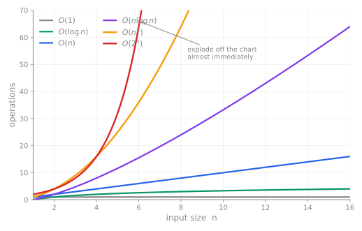
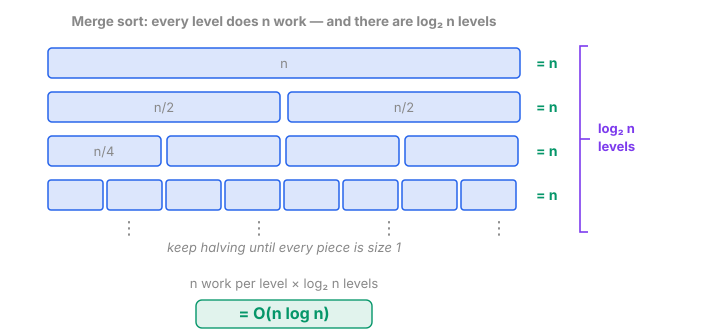

Big O · time and space · from counted work to growth, then to an exam answer
→ next idea · ↓ optional detail · write on paper before checking
🎯 Today you will be able to
1. state the Big O of a linear search, a binary search and the sorts you have written;
2. derive growth from counts — single, nested, halving and sequential loops;
3. match the command word: state, explain growth, compare methods or compare costs;
4. compare time and extra memory, and explain when constants change the practical winner.
P3
Your own numbers, from last lesson
Forty items. You measured these; nobody claimed them.
shuffled
nearly sorted
bubble
1 560
1 560
selection
780
780
insertion
400
41
In these runs, selection used half as many comparisons as this bubble implementation. What survives when n grows?
Now scale these implementations to a million items. Bubble: about 1012 comparisons.
Selection: about 5 × 1011. Both grow quadratically; both now do enormous work. The factor-of-two advantage can persist. It does not change either algorithm’s growth class.
P3
A better algorithm beats a faster computer
A model: T(n) = counted operations ÷ rate. n = 1 000 000; rate = 10⁹ operations per second.
a sort that costs n log n
about 20 million operations
0.02 s
a fiftieth of a second
a sort that costs n²
about 1 000 000 million operations
17 min
on the same machine
Derive on paper: make this quadratic model run on a computer 1 000× faster, then double n.
What are the two new times? Check: 1 second, then 4 seconds. A fixed speedup changes the multiplier; quadratic work still grows by 4× when n doubles.
P3
Throw the details away — and say which details
Suppose an algorithm does exactly 3n² + 5n + 200 operations. Watch what happens to the terms.
n
3n²
5n
200
share taken by 3n²
10
300
50
200
55 %
100
30 000
500
200
98 %
10 000
300 000 000
50 000
200
99.98 %
Relative to n², the lower terms shrink: f(n)/n² = 3 + 5/n + 200/n² → 3.
A fixed multiplier does not change the growth class. Constants can come from the algorithm and its implementation, as well as the machine.
They matter for actual work and elapsed time; Big O suppresses them when describing growth.
f(n) = 3n² + 5n + 200 is O(n²)
P3
Growth models — what does doubling n do?
Big O
name
model work at 2n →
where you have met it
O(1)
constant
no change
reading A[i]
O(log n)
logarithmic
one more step
your binary search
O(n)
linear
doubles
your linear search
O(n log n)
linearithmic
a bit more than doubles
merge sort — optional extension
O(n²)
quadratic
quadruples
these sorts, worst case
O(2ⁿ)
exponential
squares
trying all subsets
Explain the third column before naming the order. These are simple growth models, not exact guarantees from an O-bound.
For a halving process, doubling n adds about one step; it does not double the work.
P3
Feel it — operations needed, by size
n
log₂ n
n
n log₂ n
n²
2ⁿ
10
3
10
33
100
1 024
100
7
100
664
10 000
a 31-digit number
1 000
10
1 000
9 965
1 000 000
hopeless
1 000 000
20
1 000 000
20 000 000
1 000 000 000 000
hopeless
Read the bottom row across. A million items: 20 comparisons for a binary search, a million million for a quadratic sort.

P3
🎮 The crossing — where the "worse" algorithm wins
A models a quadratic sort: O(n²) with a tiny constant. ·
B models an n log n sort: O(n log n) with a fat one. Move n and watch.
P3
Two things that are now false
✗ "a lower Big O is always faster"
Only eventually. Below the crossing the quadratic
wins, and it wins by a factor of six at n = 10. Big O ranks scaling, not speed.
✗ "constants never matter"
They are dropped from the notation, not from the
world. Below the crossing the constants decide everything.
And this is not a classroom curiosity. Hybrid sorting implementations can combine an O(n log n) strategy with
insertion sorting on small runs. Their cutoffs depend on implementation and measurement; this widget is a cost model, not a benchmark.
The question is never "which algorithm is best?" It is "how big is n, really?"
Concept model
Count first. Then name the growth.
Let n = len(A) ≥ 1. Count body executions at n = 8 and n = 16; derive a formula in n and a tight growth order. Each body costs constant time.
# A — one pass
for x in A:
count += 1
# B — nested passes
for x in A:
for y in A:
count += 1
# C — halving
i = len(A)
while i > 1:
i = i // 2
# D — sequential passes
for x in A: count += 1
for x in A: count += 1
Check, 8 → 16: A: 8 → 16 · B: 64 → 256 · C: 3 → 4 · D: 16 → 32. Explain why C adds one and D only doubles.
Sequential work adds; nested work sums the inner counts. Multiplication works for B because every inner loop has length n. Check the actual bounds: a loop fixed at 100 iterations is O(1) in n.
↑ question · ↓ optional measurement · → exam forms
P3
Optional measurement — test a growth hypothesis
Each function counts its own operations. Run it at 1 000 and at 2 000, and divide.
Ratios are evidence, not proof. Here 2, 4 and 10/9 fit the counts we derived.
Test more sizes, then justify the growth from the code. A function can change behaviour beyond every size you measured.
Authored exam-form task
Write the growth, not just the symbol
A sorted catalogue contains n distinct records. A program uses iterative binary search or linear search. Compare their worst-case search time as n increases, using Big O notation. Exclude sorting time. [3]
Write a concise answer on paper. Include both algorithms, their growth relationships and a comparison. Keep this question visible while you derive it.
Short check: have you linked each algorithm to both a symbol and a growth statement, then compared their rates?
The syllabus includes time and space. Practise the reasoning as well as the notation. Past question forms show how answers earn credit; they do not predict the next paper.
1/3: both values; no growth explanation or comparison
Mechanism only: “Linear checks each record in turn; binary checks the middle and discards a half.”
0/3 here: describes methods, does not state growth rates
Growth + symbols: “Worst case: linear O(n), binary O(log₂ n). Work grows linearly for linear search and logarithmically for binary search as n grows, so binary search work increases less rapidly.”
3/3: values + both growths + relative growth
Authored rubric: Max 3. MP1 both values [1]; MP2 both growth relationships [1]; MP3 binary grows less rapidly [1]. Accept equivalent meanings; repetition earns no extra credit. Method descriptions can earn marks on a method question.
It is an upper bound on whichever case you point it at — so you must say which one.
algorithm
best
worst
average
what makes it best
linear search
O(1)
O(n)
O(n)
the target is first
binary search
O(1)
O(log n)
O(log n)
the target is the mid-point
bubble sort with a flag
O(n)
O(n²)
O(n²)
already sorted — one pass, no swaps
insertion sort
O(n)
O(n²)
O(n²)
already sorted — nothing moves back
You measured that third row yourself. Last lesson the flagged bubble sort did 39 comparisons on
already-sorted data where the plain one did 1 560. Thirty-nine is n − 1 on forty items —
a single pass that finds nothing to swap. That is what O(n) best case means, in numbers you have already seen.
State the case, or use the case already specified in the question: “O(n²) in the worst case.”
Concept + exam scope
Space — what grows in memory?
9618 §19.1 includes time and space complexity. Here count extra (auxiliary) space, excluding the input array; one fixed-size value occupies constant space.
A · Scan and total Read the n input values once. Keep only a running total and an index. Do not copy the array.
B · Copy and scan Make a new array containing all n input values, then total them in one pass.
On paper: give the time and extra-space order of A and B. If n doubles, what happens to each memory requirement?
Check: both take O(n) time. Extra space: A O(1), B O(n). Counting the stored input as well gives O(n) total space for both.
A: n reads and additions → O(n) time. A fixed number of counters and totals → O(1) extra space, unchanged when n doubles.
B: n copies + n additions → 2n work → O(n) time. n new slots plus fixed counters → O(n) extra space; doubling n doubles the dominant extra storage.
A real trade: a hash table uses O(n) storage to support expected O(1) lookup under suitable hashing and load. That is an expected-case claim; worst-case lookup can be O(n). State the model and case.
Everything in this table you have written, in the last four lessons. Now it has a language.
structure
find an item
insert an item
the honest note
array — by index
O(1)
O(n)
instant if you know where
array — by value
O(n)
O(n)
this is your linear search
array — sorted, by value
O(log n)
O(n)
binary search — but insertion shuffles everything up
linked list
O(n)
O(1)
slow to find, instant to insert once you are there
binary search tree
O(log n)
O(log n)
…if it stays balanced
Two rows explain a whole term's work. The array is O(1) to read and
O(n) to search — different questions, different answers, same structure.
And the linked list is the slowest thing here to find and the fastest to insert, which is
the entire reason it exists: you built it for the jobs where you already have the pointer.
And the last row's "if" is doing a lot of work. Insert 1, 2, 3, 4, 5 into a binary search tree in that order and
you get… a linked list. O(n).
A common database index combines a balanced tree with linked leaves. Implementations vary.
Why not just a sorted array? Look at that row again: sorted array is
O(log n) to find and O(n) to insert, because
everything after the new row has to shuffle up. A database inserts all day.
The array's find is perfect and its insert is fatal.
So the index is a tree — a B+ tree, a balanced search tree, with a fan-out in the hundreds
rather than two. Ten million rows come out about three levels deep. Find and insert
are both O(log n), and the balancing is not optional here, it is the product.
And its leaves are chained into a linked list — deliberately. That is what makes
"every order between March and June" fast: find the first one down the tree, then walk
sideways instead of searching again. Your linked list's O(1)
once-you-are-there, bought on purpose.
Then the row itself is reached by a direct pointer to its page — much closer to
A[i] than to following a chain.
Tree to find it · linked leaves to scan a range · a pointer to read it.All three rows of that table, inside one structure — because each one is
the best answer to a different question.
🕳 beyond the exam
Why n log n? — the one that feels invented
O(n) is "look at each thing once". O(n²) is "everything against everything".
But n log n is not a picture — until you count levels. 9618 assesses neither merge sort nor quicksort; this is here because it answers "is there anything better than my three sorts?"

Every level costs n — the pieces got smaller but there are proportionally more of them, so each row still
covers all n items exactly once. And there are log₂ n levels, because that is how many halvings take n down to 1.
n × log₂ n. That is the whole secret: one linear sweep at every level of a halving.
And it explains quicksort's disaster in one sentence. A good pivot halves the range — log n levels, so n log n.
A bad pivot peels off one element at a time — n levels, so n × n. Same work per level; different number of levels. 🕳 One more, free: comparison sorting needs Ω(n log n) comparisons in the worst case. There are n! possible orderings and each
comparison halves the possibilities, so you need at least log₂(n!) ≈ n log n of them. Merge sort does not just do well — it hits the floor.
🕳 beyond the exam
The wall — where no computer helps
An O(2ⁿ) algorithm on just n = 100 needs about
1.3 × 10³⁰ operations.
At a billion a second that is 4 × 10¹³ years —
about three thousand times the age of the universe.
There is no hardware answer. There is only a better algorithm, or no answer.
You already rely on this. A password of length L from 26 letters has 26L possibilities.
Adding one character multiplies the attacker's work by 26.
That is why length beats cleverness in a password — you are buying an exponent, not a constant.
🕳 And the line itself is the biggest open question in computer science.
Think of a hard Sudoku: agony to fill in, trivial to check once somebody hands you a filled grid.
P — Polynomial time — the problems we can solve quickly.
· NP — Nondeterministic Polynomial time — the problems whose answers we can
check quickly.
NP does not mean "non-polynomial" — that is the single most common
misreading of the name, and every P problem is also in NP. Is finding really harder than checking? Nobody knows. Almost everyone believes it; nobody can prove it.
There is a $1 000 000 prize for the answer, unclaimed since 2000.
What you can now say
The two values — linear O(n), binary O(log₂ n) — and the
sentence that carries them: the time increases logarithmically as the items increase linearly.
Read an order off unseen code: sequential adds, nested multiplies, halving is a logarithm.
And the two honest edges — Big O is not "the worst case" until you say so, and a lower Big O is not
faster until n is past the crossing.
Time and space: name the cost model, count what grows, and state the case. Measurements test a prediction; a finite ratio does not prove a bound.
Next: your data has been asking to become something. Objects.
🐍 waking Python…
⚡ LLM
Live LLM marking is off.
The reader runs on this Mac, not inside the slides — which is why the API key never goes near a deck.
In the CS_Materials folder, double-click Start-LLM-Marking.command
A Terminal window opens and stays open. Come back here — the chip lights up on its own within five seconds. No reload.
Double-clicking grade-server.py does nothing: macOS opens .py files in an editor rather than running them. That is what the .command file is for.